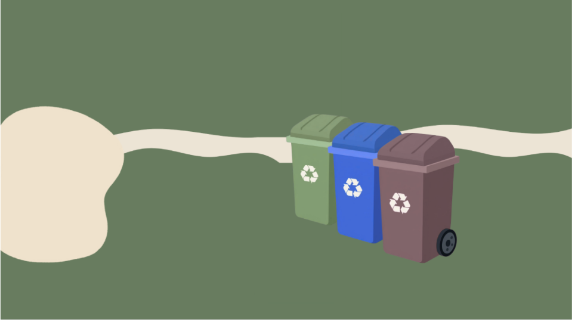
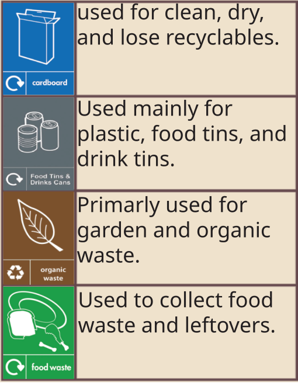

Here are some tips for saving energy:
1. Turn off lights and electronics
when not in use.
2. Use energy-efficient appliances
and light bulbs.
3. Unplug chargers and devices
when they are not in use.
4. Use natural light during the day
instead of artificial lighting.
5. Set your thermostat to an
energy-saving temperature
when you are away
from home.
Here are some tips for saving water:
1. Take shorter showers.
2. Turn off the tap while
brushing your teeth.
3. Fix leaks in faucets and toilets.
4. Use a broom instead of a hose to
clean driveways and sidewalks.
5. Collect rainwater for outdoor use.
Here are some ways to reduce waste: Shop Smartly: Buy in bulk to reduce packaging waste, and choose products with minimal packaging. Reduce Food Waste: Plan meals, use leftovers, and freeze food before it spoils. Reusable Alternatives: Switch to reusable versions of items like water bottles, shopping bags, and food containers to cut down on single-use plastics. Composting: Start a compost bin for food scraps and yard waste to create soil which is rich in nutrition.


1. Separate recyclable items from non-recyclable items.
Common recyclables include: paper, cardboard, glass,
and certain plastics.
2. Rinse out containers to remove food residue as they
can spread germs and ruin the recycling process.
3. Check local recycling guidelines to ensure you are
disposing of items correctly, as rules can vary by location.
4. Avoid placing non-recyclable items in the recycling bin,
as this can contaminate the entire batch and lead to more waste.
5. Consider donating items that are still in good condition,
such as clothing, furniture, and electronics, to reduce waste and help others.